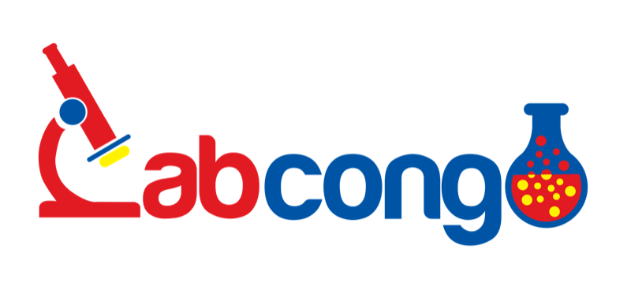
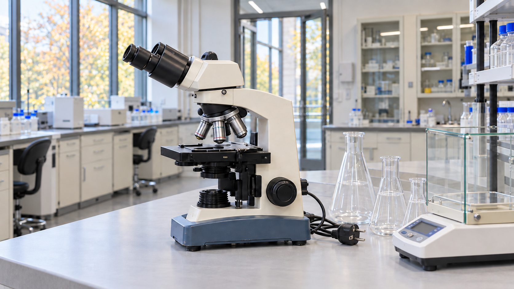
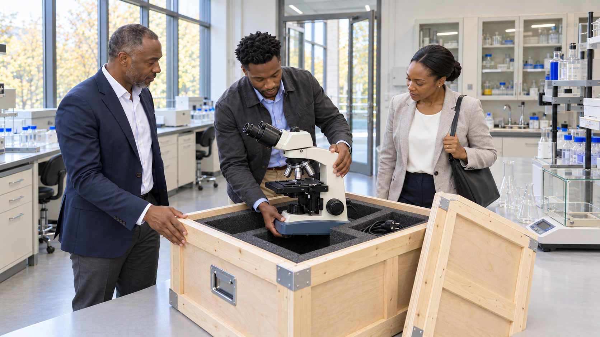
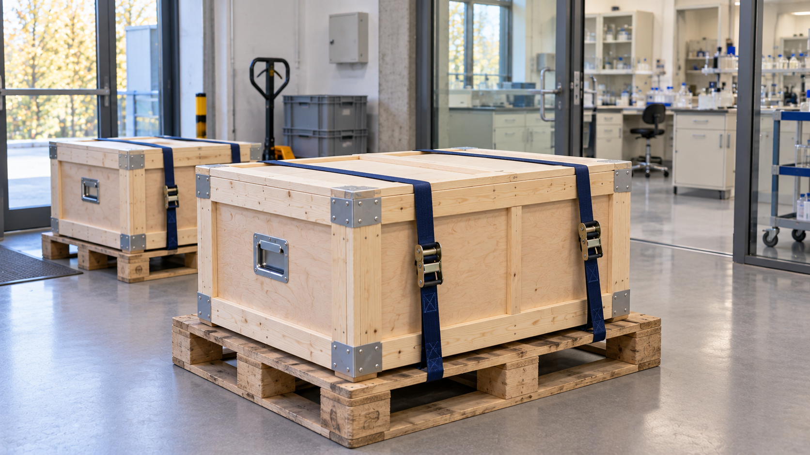
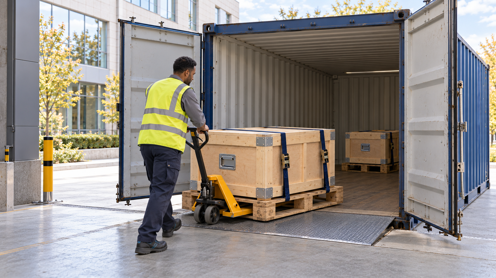

01
Centre scientifique en Europe
Référence validée
Image maître, personnages, bâtiment et rendu photographique validés par l’utilisateur.

Revue des références fixes pour la future expérience immersive. L’image maître est validée ; les six nouvelles images sont proposées pour examen.
Toutes ces images sont des illustrations générées par IA. Elles présentent des personnages et des lieux fictifs. Les photographies de réalisations et les comparaisons avant/après proviendront du projet réel.
Référence validée
Image maître, personnages, bâtiment et rendu photographique validés par l’utilisateur.
Nouvelle proposition à examiner
Le trio entre dans le laboratoire. Les fenêtres à gauche, les armoires et la paillasse établissent le décor intérieur.
Nouvelle proposition à examiner
Les mêmes représentants rencontrent deux laborantins autour du microscope.
Nouvelle proposition à examiner

Microscope ivoire à socle bleu-gris, verrerie et balance. La prise a été corrigée pour la continuité européenne.
Nouvelle proposition à examiner

Le microscope est soutenu par le bras et la base, puis présenté au-dessus du logement en mousse de la caisse ouverte.
Nouvelle proposition à examiner

La caisse fermée reprend le bois clair, les renforts, les poignées et les coins métalliques ; deux sangles bleues la fixent à une palette.
Nouvelle proposition à examiner

La caisse et sa palette passent le seuil du conteneur bleu avec un transpalette. Le manutentionnaire est un personnage distinct du trio.